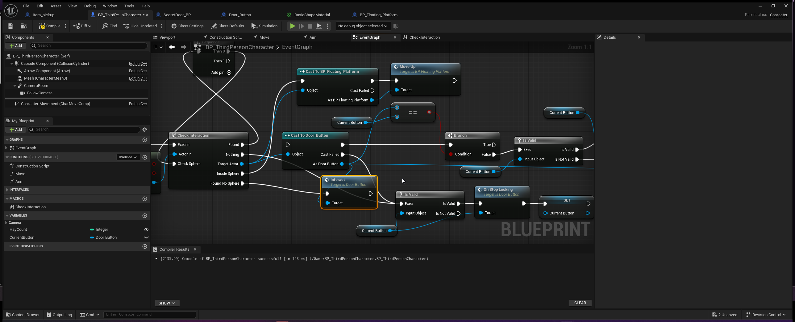
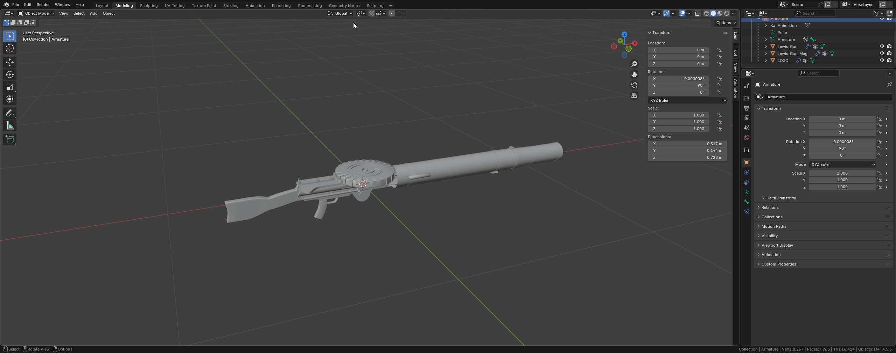
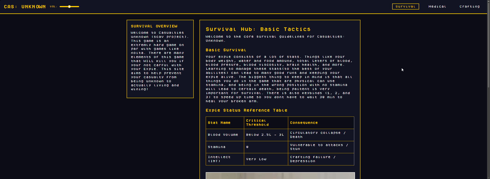
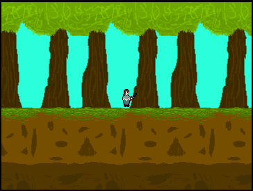

Project Portfolio
Game Design, Level Architecture & Asset Creation
A collection of my live web builds, 3D/2D art pipelines, and game prototypes.

Unreal Engine 5 • Blueprints3D Gameplay Prototypes & Interaction Systems
Advanced Blueprint node graphs managing player interaction traces, casting, state variables, and dynamic object triggering[cite: 9].

Blender • Maya3D Modeling & Hard-Surface Assets
Custom hard-surface Lewis Gun model with separated pan magazine and armature setup, alongside modular environment props.

Web Architecture • UI/UXCasualties: Unknown Survival Wiki
Structured survival knowledge base and visual sitemap covering core survival mechanics, stats, and reference tables.

Construct 3 • Aseprite2D Side-Scrolling Platformer
Custom pixel art sprite states ("run weapon"), platforming physics, and multi-layered tiled level terrain built in Construct 3.
 Construct 3 • Logic Scripting
Construct 3 • Logic Scripting
Character State & Animation Logic
Event-driven state machine managing player mirroring, weapon equips, jump transitions, and directional animation triggers.